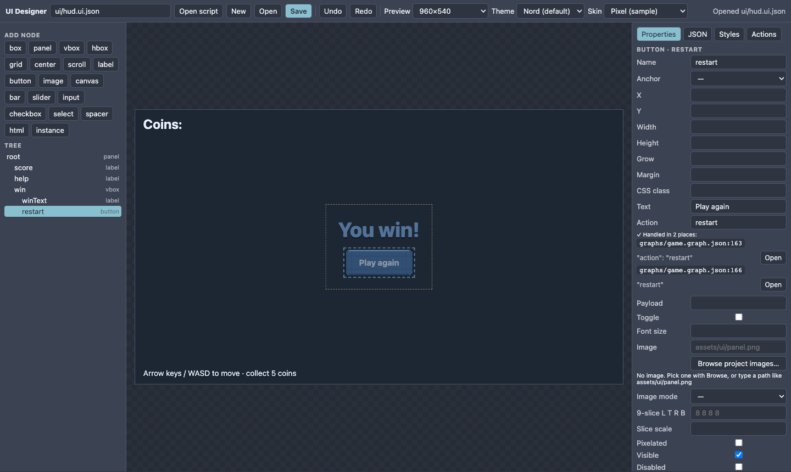
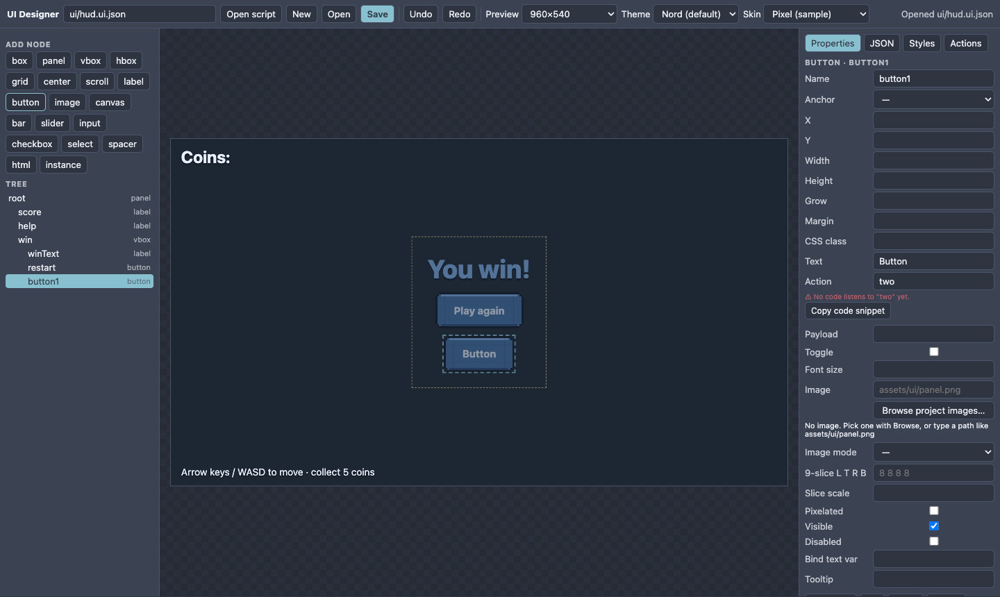

T44 Menus and HUDs with the UI Designer
Result: a title screen with Play and Quit buttons and a score label that you change from code. No HTML strings anywhere. Start from: any project (an HTML-lite project is the simplest). Allow 20 minutes.

1. Open the Designer and make a menu#
Open Window ▸ UI Designer. Type ui/menu.ui.json in the file box and press New. The Designer starts you with a title, two buttons and a score label. The big preview is the real game UI; click any element to select it, drag anchored elements to move them. Select a node and use the 3×3 anchor grid under Anchor to pin it to a corner, edge or the centre (or fill); Copy / Paste (or Ctrl/Cmd+C / V) duplicates a node into another container; the Preview list now has tablet, phone-landscape and small-phone sizes. The Tree on the left shows the structure, Properties on the right shows the selected node.
Checkpoint: click Play in the preview. The Properties panel shows button · play with Action play.
2. Change the layout the Godot way#
- Select
buttons(avbox). Set Gap to 20 and Width to 300. - Select the title label. Edit its Text to
[color=#f7d89b]MY[/color] [b]GAME[/b]— rich text works inline. - Press Add node ▸ button with
buttonsselected: a new button appears inside it. Name itoptions, textOptions, actionoptions. - Drag the
optionsrow in the Tree abovequitto reorder. - Pick a colour preset from the Theme box.
Press Save (or Ctrl+S). The file is ui/menu.ui.json in your project; the JSON tab shows exactly what was written.
3. Load it from code#
Plain HTML project (app.js):
import { createUI } from './lib/nord-ui.js'; // copy runtime/core/uiscene.js to lib/nord-ui.js
export async function mount(root) {
const ui = createUI(root);
const menu = await ui.load('ui/menu.ui.json');
menu.on('play', () => { menu.hide(); startGame(); });
menu.on('quit', () => window.close());
}In a normal 2D/3D scene script, game.ui already is the manager:
async start() {
this.menu = await this.ui.load('ui/menu.ui.json');
this.menu.on('play', () => this.game.events.emit('start-game'));
}Where is "play" handled?#
Type the action into the button's Action field. Under it the Designer shows where your code handles it, with an Open button that jumps to the line. If it says ⚠ No code listens, use Copy code snippet and paste it where you load the file. The Actions tab shows this for every button at once.

two: not handled yet.4. Talk to the UI from code (and back)#
menu.set('score', 120); // every label containing {score} updates
menu.$('score').color = '#a3be8c'; // style one node
menu.$('play').disabled = true; // buttons can be disabled
menu.$('buttons').add({ type: 'button', text: 'Extra', on: { pressed: 'extra' } }); // build at runtime
menu.on('extra', () => console.log('extra pressed'));menu.$('name') throws a clear error when the name does not exist; menu.get('name') returns null instead. Every action is also sent as ui:<action> on game.events, so an event sheet can react to ui:play without any JavaScript.
5. A HUD with a bar#
Create ui/hud.ui.json: add a label named score (anchor tl, text Score: {score}) and a bar named hp (anchor tl, y 48, width 200, Bind value hp). Then:
const hud = await this.ui.load('ui/hud.ui.json');
// each frame:
hud.set({ score: this.score, hp: this.health / 100 });Values that did not change are skipped, so calling set every frame costs almost nothing.
6. Switch screens, reuse pieces#
ui.only('hud') shows one screen and hides the others. An instance node embeds another UI file (for example one shared dialog.ui.json) inside a screen, with its own name, anchor and size.
Where to go next#
- Add a second language: write
@menu.playas a button text and fill the key in your language tables (T26). - See a finished game that uses the same flow: T38 Coastline Sprint.
- Format reference and in-world 3D UI:
docs/UI_SCENES.md, andgame.gui.scene(def, { entity }).